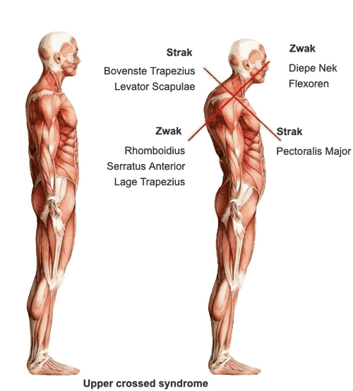

Over mij
Ik ben Wonne Back.
Na mijn middelbare school ben ik als lichttechnicus gaan werken, zowel toerend voor bekende Nederlandse bands als in de Melkweg en de Paradiso, Amsterdam.
In 2005 ben ik fysiotherapie gaan studeren aan de Hogeschool van Amsterdam en in 2009 ben ik afgestudeerd.
Tijdens mijn opleiding fysiotherapie heb ik een honours programma gevolgd in het AMC. Het is voor een groot deel dankzij het snijzaal-practicum dat ik de anatomie van het menselijk lichaam heel goed in 3D eigen heb kunnen maken. Dit geeft mij tot op de dag van vandaag een voordeel, namelijk omdat mijn anatomische kennis sterk ontwikkeld is en ik mij hierdoor een goede voorstelling kan maken van wat er met spieren en gewrichten in beweging gebeurt.
In de jaren hierna heb ik zelf de anatomie lessen in de snijzalen van het AMC verzorgd.
Na mijn opleiding ben ik begonnen met werken bij Waterland Fysiotherapie. Daar heb ik veel ervaring opgedaan in het begeleiden van revaliderende patiënten maar hier ben ik ook al begonnen mij te richten op hoofdpijnklachten door o.a. Dry Needling, zowel Level 1 (basis opleiding veelvoorkomende klachten) alsook Level 2 (speciaal voor patiënten met hoofdpijn en/of hals/kaakproblematiek).
In de opvolgende jaren ben ik mij verder gaan specialiseren in de behandeling van hoofd-nek en lage rugpijn en de uitstralende klachten die hier vaak bij horen. In 2015 heb ik de Watson methode geleerd, oftewel dé meest succesvolle behandelmethode voor spanningshoofdpijn en migraine, en pas dit al jaren succesvol toe op patiënten.
Bij het Back & Neck Centre waar ik in 2016 ben gaan werken, ben ik me gaan verdiepen in McKenzie therapie en Echografie.
Door het combineren van bovenstaande methoden zijn veelal alle vormen van hoofdpijn effectief te behandelen of tot een acceptabel niveau terug te dringen.
In 2020 ben ik als lid van een maatschap begonnen te werken bij Fysiotherapie Schinkelkade. Hier werken we met 5 andere therapeuten onder een dak in een team dat elkaar goed aanvult.
Het licht doe ik ook nog steeds. Sinds ik ben begonnen met mijn fysiotherapie studie ben ik met bands blijven toeren en dat doe ik nu de laatste jaren voor de Jeugd van Tegenwoordig. Mijn werk kan je zien op www.backlights.nl
Ik woon samen met mijn vrouw en twee dochtertjes in pittoresk Broek in Waterland.
- Fysiotherapie -
- McKenzie methode -
- Watson methode -
- Dry needling level 1 -
- Dry needling level 2, hoofd/hals gebied -
- Kinesiotape -
- Oefentherapie -
Mijn visie
Naar mijn idee wordt er in de huidige maatschappij teveel gebogen en te weinig gestrekt!
Laptop werk, lang op een iPad of telefoon kijken, Netflix op de bank en zelfs een boek lezen of breien, allemaal activiteiten die erg belastend zijn voor de nek en de onderrug. Zo klinkt het in eerste instantie niet, maar een dag “niets doen” is al gauw iets dat de nek en onderrug niet fijn vindt.
Dit resulteert veelal in klachten met hun oorsprong in de nek, zoals hoofdpijn, nekklachten, schouderklachten, duizeligheid of oorsuizen. Vanuit de rug kan dit uitstralen naar de bil, heup, lies of verder het been in tot aan de tenen.
Een verkeerde houding die al zoveel jaar aanwezig is, is niet eenvoudig te veranderen. Houdingsadvies is hierbij belangrijk maar ook heel moeilijk om vol te houden. Vanuit de McKenzie wordt er veel gewerkt met "repeated movements" oftewel, een bepaalde oefening heel vaak doen. Vaak is het een simpele oefening maar wel met de vraag of die 5 à 6 keer per dag uit te voeren. Dit zorgt ervoor dat de belasting van de nek of de rug elke dag met grote regelmatig wordt verminderd en zodoende in toenemende mate kan worden ontlast.
Het combineren van McKenzie, Dry Needling en de Watson Methode brengt snelle en duurzame klachtenvermindering tot stand.
